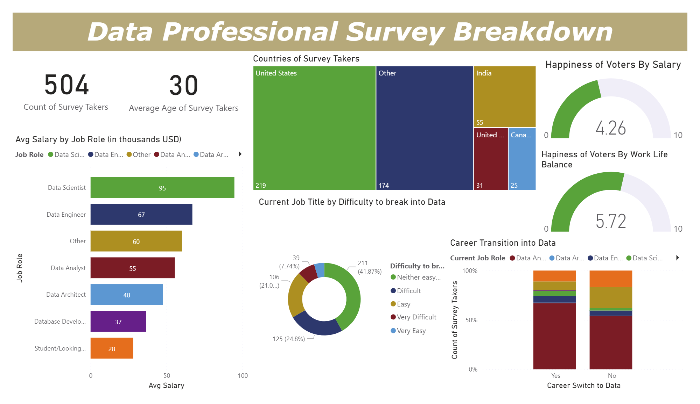

Power BI Data Professional Survey Analysis
This dataset holds information about various data professionals from different countries. It covers important details like salary, work-life balance, and career transitions, giving us a closer look at the experiences of data professionals worldwide.
GOAL
The goal is to create an intuitive and informative dashboard to analyze key aspects of the dataset encompassing data professionals to provide actionable insights into salary distributions, work-life balance, and career transitions, fostering a clear understanding of trends and facilitating informed decision-making for individuals in the data field.
CONCLUSION
The voter happiness metric reveals that work-life balance and salary satisfaction averages at 5.72 and 4.26 out of 10
respectively, indicating a potential area for improvement.
Data scientists and data engineers emerge with the highest average salaries, underscoring the financial significance
attributed to these specialized roles within the organization.